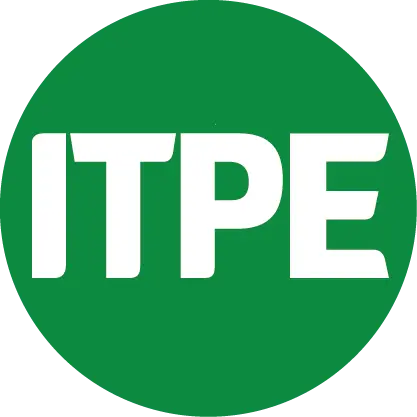
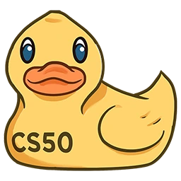

Research
Imitation learning for real-world robotic manipulation
Thesis · Expected completion, July 2026
Current thesis direction on manipulation with SO-ARM101 platforms, with emphasis on real-world data collection and deformable object interaction.
Thesis proposalPIU: Proximity-guided Identity Unlearning in ID-Conditioned Diffusion Models
Preprint · arXiv preprint, submitted to ICJB26
Identity unlearning in ID-conditioned diffusion models: targeted unlearning while preserving generation utility.
arXiv: 2605.22311Visual-Thought Decoder for task-specific feature representations
In progress
Framework work on a visual-thought decoder pipeline for learning task-specific feature representations and structured intermediate reasoning for downstream embodied tasks.
Recent work
Robotics, machine learning, and embedded systems work.

Trajectory
Education

2024 - Present
MSc in Artificial Intelligence
Erasmus Mundus Joint Master in Artificial Intelligence
Specialisation in Data Science at the University of Ljubljana.

Universitat Pompeu Fabra -
Barcelona
2024

Sapienza Università di Roma
2025

University of Ljubljana
2025-2026
Research‑focused Erasmus Mundus programme integrating machine learning and modern AI across leading European universities.

2021 - 2024
BSc in Robotics and Digital Systems
Tecnologico de Monterrey
-
Focused on digital and embedded systems, intelligent AI and robotics systems, automation, and
control logic.
Experience

January 2024 - February 2024
Robotics Lab Assistant
Kavraki Lab, Rice University
• Designed and implemented a ROS system for integrating motion
planning and Samsung Labs’ SceneGrasp for multi-object 3D reconstruction and grasp pose
estimation of robotic manipulators using RGB-D data.
• Developed a ROS package for pick-and-place using ArUco markers; validated in simulation and
on hardware.

March 2022 - October 2023
Business Automation Intern
Steelcase
• Developed and implemented automation solutions for business
processes for internal clients.
• Utilized Agile methodology and technologies such as UiPath RPA, Excel VBA, Power Automate,
and Python.
Work Stack
Frameworks & Libraries
PyTorch
Scikit-Learn
Pandas
OpenCV
Hugging Face
Tools, Platforms & Cloud
Docker
Git
PostgreSQL
AWS

W&B
Robotics & Embedded
ROS
NVIDIA Jetson
ESP32
Arduino
Programming Languages
Python
C++
MATLAB
R
Selected Certifications

Data Science Diploma
2021|Instituto Tecnológico del Petróleo y Energía
60 hours diploma program covering Data cleaning, engineering and analysis, machine learning fundamentals, and data visualization.

CS50's Introduction to AI
2024|Harvard University - CS50
Comprehensive course combining search algorithms, logic, machine learning, neural networks, and language processing through hands-on Python projects.
View CertificateMachine Learning Specialization
2024|DeepLearning.AI - Coursera
Supervised learning (regression, classification), unsupervised learning (clustering, recommender systems, RL foundations), and deep learning, along with practical machine learning workflows.
View Certificate